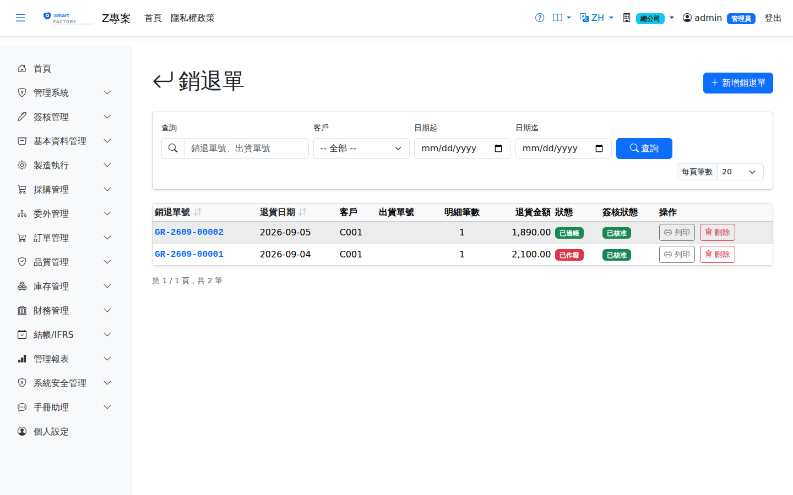

銷退單Sales Return
路由：/SalesReturn | 銷售退回入庫與應收沖減Route: /SalesReturn | Sales returns into stock and AR reduction
處理客戶退貨：參照原出貨單建立銷退單，退貨入庫過帳並沖減應收金額。Handles customer returns: a sales return is created against the original shipment, the goods are posted back into stock and the AR amount is reduced.

銷貨退回畫面截圖（示意，實際欄位/資料依權限與查詢條件而異）Sales return screenshot (illustrative; actual fields and data vary by permission and query criteria)
查詢Search
1
查詢列輸入條件後點「查詢」；欄位標題可點擊排序，清單下方有分頁導航。Enter your criteria on the query bar and click "Search"; column headers can be clicked to sort, and the paging controls sit below the list.
單據狀態Status
| 狀態Status | 說明Guide |
|---|---|
| 草稿 DraftDraft | 已建立未生效，可自由編輯、刪除；需簽核者於此狀態送審。Created but not yet effective; can be freely edited or deleted, and submitted for approval from this status. |
| 待審核Pending approval | 已送審等待簽核，不可編輯；可撤回改回草稿。Submitted and waiting for approval; it cannot be edited, but it can be withdrawn back to draft. |
| 已確認 ConfirmedConfirmed | 簽核核准（或免簽核直接確認）後生效，等待後續作業/過帳。Effective once approved (or confirmed directly when no approval is required), waiting for the next step or for posting. |
| 已過帳 PostedPosted | 庫存/帳務已入帳，單據不可再修改。Stock and accounting have been posted; the document can no longer be changed. |
| 已作廢 VoidVoid | 反向沖銷已過帳內容；作廢原因需留存，不可復原。Reverses what was posted; the void reason is kept and the action cannot be undone. |
作業流程Process
建立銷退單Creating a sales return
1
點「新增」開啟側欄，填寫銷退單表頭與明細行後儲存（草稿）。Click "Add" to open the panel, fill in the sales return header and lines, then save (as a draft).
2
點「送審」進入簽核流程；核准後單據自動轉「已確認」。若免簽核，直接點「確認」。Click "Submit" to start the approval flow; the document turns to "Confirmed" once approved. Where no approval is required, click "Confirm" directly.
後續作業Follow-up actions
1
已確認/已過帳單據可點「列印」產生含 QR Code 的正式表單（新分頁開啟）。Confirmed and posted documents can be printed with "Print", producing the official form with a QR code in a new tab.
2
已過帳單據如需沖銷，點「作廢」並填寫原因；系統產生反向庫存/帳務異動。To reverse a posted document, click "Void" and enter a reason; the system creates the reversing stock and accounting entries.
銷退過帳時已回沖應收（未收款發票直接改小、已收款開折讓單），作廢銷退不會把這筆補回去，因此：有未作廢的折讓單要先作廢；來源出貨的應收發票還沒作廢時不允許作廢銷退——系統刻意不自動補回應收，更正一律由人開單處理：退錯了就另開一張出貨單把貨出回給客戶，會產生新的應收發票；銷退不會釋放訂單的已出量，訂單若已全數出貨，新出貨單不要掛原訂單。Posting a sales return already reduced the receivable (an unpaid invoice is reduced directly; a paid one gets a credit note), and voiding the return does not add it back. So void any credit note first, and while the source shipment's AR invoice is still active the return cannot be voided — the system deliberately never adds the receivable back on its own, so corrections are always made with a document: if the return was a mistake, create a new shipment to send the goods back to the customer, which issues a new AR invoice; a return does not free up the order's shipped quantity, so if the order is fully shipped, do not link the new shipment to it.
銷退入庫成本取原出貨明細「實際出庫成本」的加權平均（已作廢沖回的部分不計）。同一出貨行分批揀貨或取消確認後重出時，各批單價可能不同，系統取其平均，不取任一筆。The cost of returned goods is the weighted average of what the original shipment line actually took out of stock (reversed portions excluded). When a shipment line was picked in batches or re-shipped after a cancellation, each batch may carry a different cost; the system uses their average rather than any single batch.
欄位說明Field reference
表頭Header
| 欄位Field | 說明Guide |
|---|---|
| 銷退單號Return No. | 系統採番，不可修改Numbered by the system; not editable |
| 退貨日期Return Date | 必填Required 客戶退回的日期；決定庫存回沖與沖銷收入的期間Date the customer returned the goods; it determines the period of the stock reversal and the revenue reversal |
| 客戶Customer | 必填Required 退貨客戶Returning customer |
| 來源出貨單Source Shipment | 被退貨的出貨單；選定後可帶出該單明細的可退量Shipment being returned; selecting one brings in the returnable quantity of its lines |
| 備註Notes | 整張銷退單的補充說明Notes for the whole sales return |
明細Lines
| 欄位Field | 說明Guide |
|---|---|
| 品號Item | 必填Required 退回的料件Item returned |
| 來源出貨單Source Shipment | 該行對應的出貨單與行號，用於追溯原始交易與單價Shipment and line this row belongs to, used to trace the original transaction and price |
| 退貨數量 / 單位Return Qty / UOM | 必填Required 本次退回數量；不可大於該出貨行的可退量（已出量 － 已退量）。選了品號後，單位只列該品號的庫存單位與查得到換算的單位（預設庫存單位）；存檔時系統依品號主檔換算成庫存數量入帳，查不到換算的單位會擋下並說明。Quantity returned this time; it cannot exceed the returnable quantity of the shipment line (shipped − already returned). Once a product is chosen, the unit list shows only its stock unit and the units that convert to it (stock unit preselected); on save the system converts to the stock quantity from the product master, and a unit with no conversion is rejected with an explanation. |
| 幣別Currency | 該行的交易幣別；本幣金額依單據匯率換算而得Transaction currency of the line; the local amount is converted with the document rate |
| 單價Unit Price | 交易幣別的未稅單價，小數位數依幣別設定Price before tax in the transaction currency; decimal places follow the currency setting |
| 稅別Tax | 稅別代碼，決定稅率；改稅別會重算稅額Tax code, which determines the rate; changing it recalculates the tax |
| 未稅金額Line Amt | 數量 × 單價Quantity × unit price |
| 稅額Tax | 未稅金額 × 稅率Amount before tax × tax rate |
| 含稅總額Total | 未稅金額 ＋ 稅額，仍為Amount before tax + tax, still in 交易幣別Currency |
| 本幣金額Local Amount | 含稅總額換算為本位幣的金額（本幣＝外幣 × 匯率）；表頭合計與帳務入帳一律採本幣The tax-inclusive total converted to local currency (local = foreign × rate); header totals and accounting entries always use local currency |
| 已上架量Put-Away Qty | 倉庫作業實際收回上架的累計數量；全部上架完成後單據自動過帳Cumulative quantity actually put away by warehouse operations; the document posts automatically once everything is put away |
| 備註Notes | 該明細行的個別說明（退貨原因等）Notes for this individual line (return reason and so on) |
若退回品需檢驗，檢驗規範勾選「銷退需 RQC」者會在確認時自動建立退貨檢驗單。If returned goods need inspection, an inspection specification with "RQC required on sales return" checked creates the return inspection order automatically on confirmation.